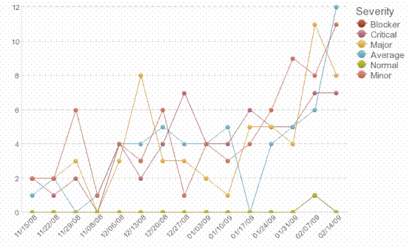

Purpose
A project's pattern of defect arrival helps the team understand their likelihood of achieving their release
commitments. It indicates how much more testing is needed before the system can be released, because a high defect
arrival rate typically indicates unstable code. The team can also use this metric to forecast the number of customer
reported problems post-ship.
This metric is also used to to determine the completeness of the testing process, the ability of the team to find
defects (the rate of defect discovery) and to monitor process improvements.
Definition
-
Count the number of defects found in each unit of time (usually week, but could be day or month,
depending on iteration length).
-
Count total cumulative defects found
Defect arrival data can be grouped by activity (i.e. the activity performed which discovered the defect).
Analysis
Monitor defect arrivals using a trend line for each severity. Plot the number of defects on the Y axis and iterations
on the X axis.
Expected trend - Ideally, the defect arrival rate will slow down over time for each severity type. As
defect arrivals diminish, confidence in meeting release goals increases.
Increasing defect arrivals - When defect arrivals are not tapering down (especially in the last half
of the lifecycle), it suggests the team may continue to find defects at a rate that impacts the release date. It can
also forecast more defects found after the software ships. This trend can occur as a result of increased testing
efforts, the injection of more code defects, or increased code development activity (the more code is created, the more
defects are likely to be introduced). Perform analysis to determine the cause of the increasing defect arrival rate in
order to take the appropriate corrective action. The team may not be successfully adopting best practices of Test
Management.
Below is an example of a Defect Arrival Rate report, which shows the number of defects across the development
lifecycle. The high severity lines trending upward in this example indicate the project is not stabilizing.

For Agile and/ or iterative development approaches, testing starts early in the development lifecycle.
-
An upward trend of defects found (cumulative) from the beginning of the lifecycle is expected
-
The number of defects found (in each iteration) should be consistent across the lifecycle. Expect a reduction in
defects found at the end of lifecycle (if testing has been performed properly)
-
The number of closed defects should be equal or very close to the number of defects found in that iteration (i.e.
the opened defects should burn down to zero)
For waterfall or non-iterative development projects, the test cycle usually begins late in the development lifecycle.
-
The number of defects found trends upward toward the middle to the end of the development lifecycle. The defect
discovery rate slows down at the end of development. Expect a bell curve for defect arrival.
-
The number of opened defects trends downward to zero when development is coming to an end.
Frequency and reporting
Data is typically reported weekly, or at a minimum at the end of every iteration. Defect Arrival are discussed as part
of the readiness-to-ship review meeting.
Collection and reporting tools
IBM® Rational® ClearQuest® and IBM® Rational® Team Concert® collect defect arrival data. IBM® Rational® Insight®
reports on this metric.
Assumptions and prerequisites
-
Defects are captured in a tool and categorized by their severity and the activity performed to discover them.
Pitfalls, advice, and countermeasures
-
When the defect arrival rate falls, confirm that testing efforts have not reduced and that test coverage is high.
-
When defect arrivals decrease at a specific point in the lifecycle, it could be that testing has slowed due to
reduced testing staff availability, or because the development team is focused on release preparation and has asked
that testing efforts slow down.
-
In some cases, feature requests are mistakenly classified as defects. This can affect the defect arrival rate.
-
Be aware of the potential for conflict between developers and testers when this metric is tracked. Developers are
incented to keep the defect arrival rate low so that the system can be released. Testers, however, are often
incented based on the number of defects they identify. Confirm that data is reported accurately with no bias based
on this conflict of interest.
-
Confirm that defects are not being masked or downgraded in severity as the release date nears
-
This metric should be used as an indicator of team performance rather than individual performance (e.g. testers not
finding enough defects, or developers introducing too many defects)
-
Ensure that the organization emphasizes defect identification as a positive driver in achieving customer
satisfaction
|